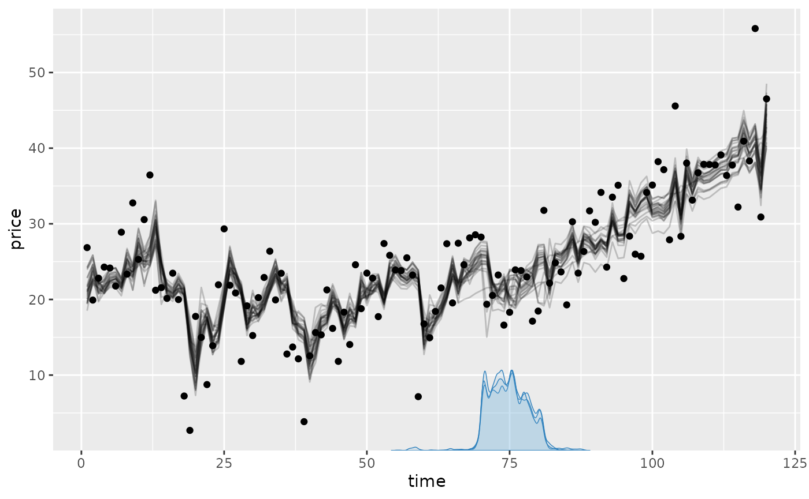
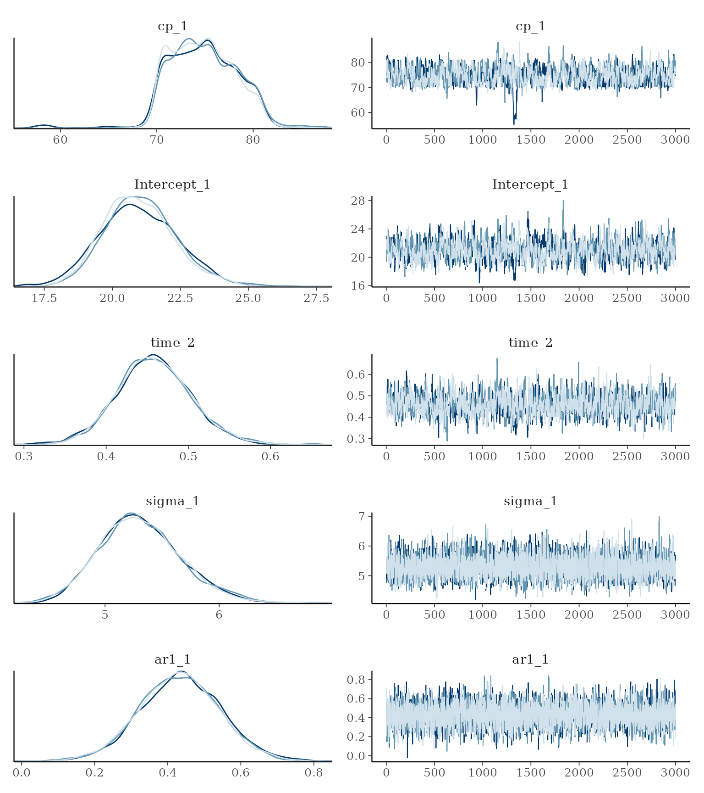
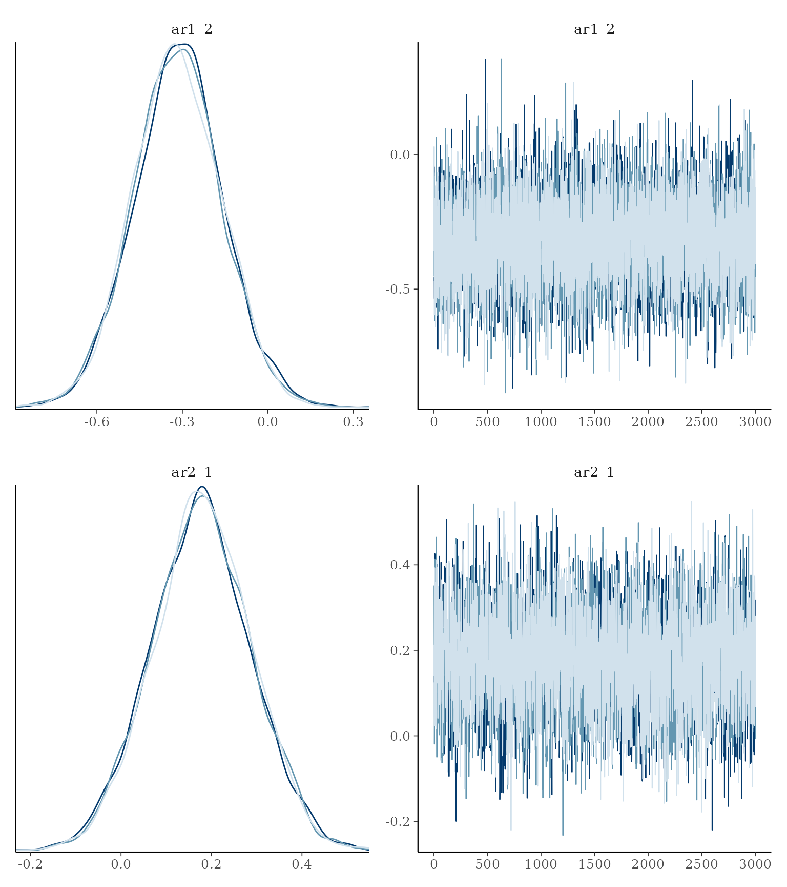
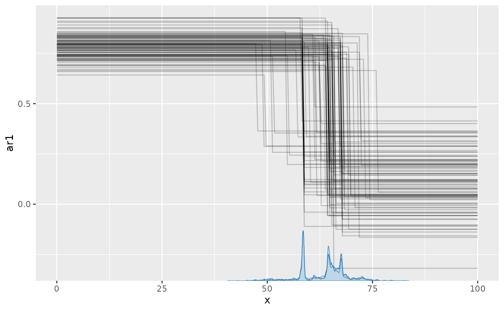
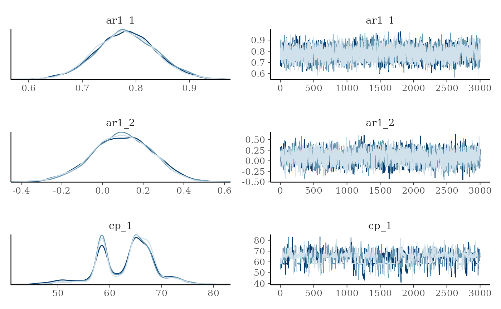
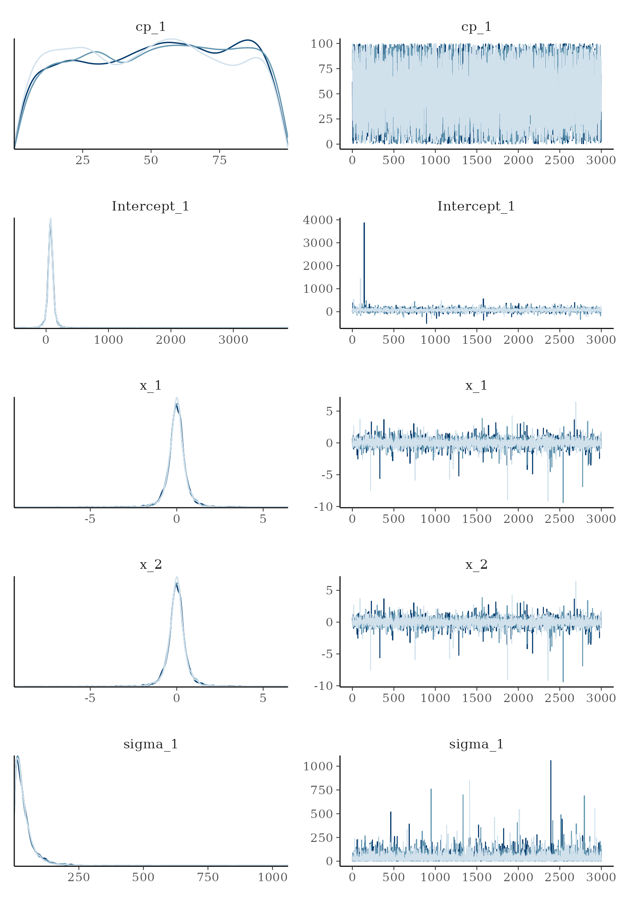
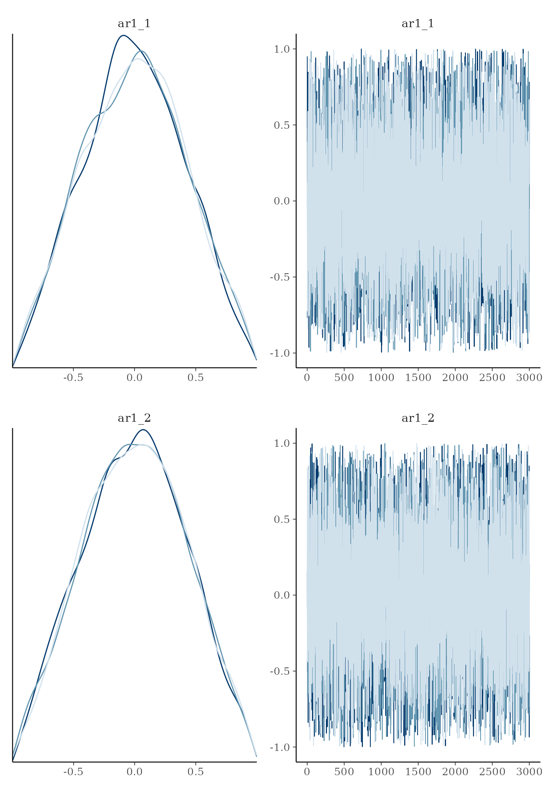

Serial dependence is common in time series. Add autoregressive terms
with ar(p), moving-average terms with ma(q),
or both in the segment formulas:
The most common use case is still ar(1). Like other
mcp terms, AR and MA coefficients carry over to later
segments until another term for the same component changes them. An
ar(p) or ma(q) declaration replaces that whole
component: if ar(1) follows ar(2), the lag-2
coefficient is zero in the later segment. Both accept a regression
formula, such as ar(1, 1 + x) or
ma(1, 0 + x).
GARMA definition
mcp implements AR and MA as a generalized ARMA (GARMA)
recurrence on the response-family link scale. If
is the ordinary regression predictor from the segment formulas and
is the predictor including serial dependence, then
where
is the
lag-
autoregressive (AR) coefficient at time
,
is the
lag-
moving-average (MA) coefficient at time
,
is the link function, and
is the boundary-constrained observation. Thus ar() uses
lagged link-scale residuals relative to the ordinary regression, while
ma() uses lagged one-step innovations. Unavailable lags at
the beginning of the series contribute zero. This same recurrence is
used by JAGS, fitted values, predictions, log likelihoods, and
fresh-series simulation.
A key feature of this recurrence is that AR/MA memory flows continuously across change points:
- For an order- component in a new segment, the last observations before the change point are input into the first in the new segment, weighted by the new segment’s AR/MA parameters.
- AR/MA lags do not reset at segment boundaries; they only reset at
the very beginning of the whole dataset, or across independent series
when using
series = "column_name"insidear()orma()(e.g.ar(1, series = id)). - Because change point locations are estimated with posterior uncertainty, the observation boundary where AR/MA parameters switch varies conditionally across MCMC draws.
GARMA currently supports only the default links for
gaussian() (identity), binomial() (logit),
poisson() (log), and negbinomial() (log).
bernoulli() and non-default links are rejected for now.
Warning: The AR and MA coefficients are modeled
directly and are not jointly constrained to the stationary or invertible
regions. With higher-order terms such as ar(2),
independently bounded coefficients can violate the usual root
conditions. Coefficients that change across predictors or segments, such
as ar(1, 1 + x) or
model = list(y ~ ar(1), ~ ar(1)), instead define a
time-varying process to which the usual constant-coefficient conditions
do not directly apply. The same applies to ma().
Observation boundary
The transformed observation
keeps log and logit residuals finite when counts lie on a link boundary.
The default boundary = 0.1 replaces zero counts by 0.1 for
Poisson and negative-binomial models. For binomial models, counts are
constrained to the interval from 0.1 to trials - 0.1 before
conversion to a rate. It has no effect for Gaussian models.
The default should usually be left unchanged. If needed, set it on
either term, for example ar(1, boundary = 0.01) + ma(1). AR
and MA share one boundary within a segment, and the boundary may differ
between segments. Supplying different AR and MA boundaries in the same
segment is an error.
Simple example
Let’s simulate some data using the mcp_example()
function with the “ar” settings:
library(mcp)
future::plan(future::multisession, workers = 3)
set.seed(42) # Make the script deterministic
fit = mcp_example("ar", sample = FALSE)## Generating residuals for AR(N) model since the response column/argument was not provided.
head(fit$data)## price time
## 1 26.85479 1
## 2 19.91843 2
## 3 22.81123 3
## 4 24.27657 4
## 5 24.15365 5
## 6 21.77232 6See how this was generated in fit$example_code. We model
this as a plateau (1) with a second-order autoregressive
residual (ar(2)) followed by a joined slope
(0 + time) with a negative first-order autoregressive
residual (ar(1)):
model = list(
price ~ 1 + ar(2), # Intercept_1, ar1_1, ar2_1
~ 0 + time + ar(1) # time_2, ar1_2; turns off second-order AR
)
fit = mcp(model, fit$data, seed = 42)Let’s plot it and we see that AR was strong in the first segment and weaker-but-negative in the second:

We can summarise the inferred coefficients:
summary(fit)## Family: gaussian(link = 'identity')
## Iterations: 3000 from 3 chains.
## Segments:
## 1: price ~ 1 + ar(2)
## 2: price ~ 1 ~ 0 + time + ar(1)
##
## Change point parameters:
## name mean sd lower upper rhat ess_bulk ess_tail sim match
## cp_1 74.88 3.404 70.012 80.8900 1 568 1328 75.00 OK
##
## Population-level parameters:
## name mean sd lower upper rhat ess_bulk ess_tail sim match
## Intercept_1 21.00 1.350 18.509 23.8427 1 631 1297 20.00 OK
## time_2 0.46 0.046 0.370 0.5524 1 1131 1497 0.50 OK
## sigma_1 5.31 0.358 4.662 6.0729 1 4652 4517 5.00 OK
## ar1_1 0.43 0.110 0.215 0.6518 1 4627 6150 0.40 OK
## ar1_2 -0.32 0.156 -0.620 -0.0065 1 6025 5124 -0.30 OK
## ar2_1 0.18 0.109 -0.037 0.3914 1 4975 7028 0.15 OKThe naming syntax is [component][order]_[segment] for
intercepts. For example, ar1_2 is the first-order
autoregressive coefficient and ma1_2 the first-order
moving-average coefficient in segment 2. Slopes use the usual
mcp parameter names, e.g., ar1_x_3 for a slope
on AR(1) in segment 3.
Comparing the columns mean and sim we see
that the AR coefficients are reasonably recovered. In fact, the
posterior mean is almost always exactly the same as
arima(data, order = c(N, 0, 0)) (see below), so the
non-perfect fits are due to randomness in the simulation - not in the
fit.
For Gaussian GARMA models, sigma describes the
innovations, i.e., the part of the residuals not explained by
AR and MA coefficients. sd(fit$data$price) is therefore
generally higher. In this case, the SD of raw data in the plateau is
8.93. As always, it is good to assess posteriors and convergence more
directly:


Sometimes, the trace plot shows that the change point
(cp_1) is not well identified with this model and data. As
discussed in the article on tips,
tricks, and debugging, you could combine a more informative prior
with more samples (mcp(..., warmup = 10000, iter = 10000)),
if this is a problem.
You can do hypothesis testing with GARMA models using
hypothesis(). Read
more here or scroll down for an applied example.
Tips, comments, and warnings
The AR and MA terms apply to link-scale residuals from the ordinary regression. In time-series jargon, this is a dynamical regression model where the ordinary regression parameters make up the deterministic structure. See further comments in the section on priors below.
To control the direction of a change, put a one-sided prior
on the corresponding coefficient, e.g.,
ar1_x_1 = "dnorm(0, 1) T(0, )". See recommendations in the section on priors.
Regression on AR/MA coefficients
You can specify how the coefficients change with
using ar(p, formula) and ma(q, formula). For
example, ar(1, 1 + time) models a steady change in AR(1)
strength. These regression formulas use an identity link, so slopes can
easily produce non-stationary or non-invertible coefficients. See the section on priors for ways to constrain them.
The same formula is applied separately to every order in the term.
Population-level mcp
formula syntax is available inside both terms, so you could use
ar(3, 1 + I(x^2) + exp(z)) or
ma(1, 0 + group). Group-level terms such as
(1|id) are not supported inside ar() or
ma(). Transformed predictors must stay within the
transformation’s domain; for example, values passed to
log() and sqrt() must be non-negative.
Combining ar(), ma(), and sigma()
You can combine ar() and ma() with any
regression model and with group-level change points. For
Gaussian models, sigma() controls the innovation standard
deviation:
Order your data
AR and MA lags apply to the order of rows in the data frame
without taking into account the distance between values of
x. This has two important implications:
- You probably want to sort your data according to your
x. Just dodata = data[order(data$x), ]. - Adjacent data points that lie years apart are modeled to be just as (auto)correlated as adjacent points lying seconds apart.
For grouped longitudinal data, identify independent residual
histories with series inside ar() or
ma() and sort each series by time:
data = data[order(data$id, data$x), ]
model = list(
y ~ 1 + ar(1, series = id),
~ 0 + x + ar(1)
)
fit = mcp(model, data)Rows belonging to each series must be contiguous. AR and MA lags
reset at each series boundary. The series argument inside
ar()/ma() is separate from group-level effects
such as (1 | id): either can be used without the other.
Simulating autocorrelated change point data
Assessing the correctness of autocorrelation is less intuitive than
seeing e.g. a mean fit. However, we can verify mcp up
against more tested-and-tried functions such as arima() in
base R. Let us simulate a single AR(3) segment, i.e., without change
points, and see if it fits:
# Model
model = list(response ~ 1 + ar(3))
# Simulate data
df = data.frame(time = 1:200, response = 0)
empty = mcp(model, df, sample = FALSE, par_x = "time")
set.seed(42) # For consistent "random" results
df$response = empty$simulate(
empty,
df,
Intercept_1 = 20,
ar1_1 = 0.7,
ar2_1 = 0.2,
ar3_1 = -0.4,
sigma_1 = 8)## Generating residuals for AR(N) model since the response column/argument was not provided.##
## Call:
## arima(x = df$response, order = c(3, 0, 0))
##
## Coefficients:
## ar1 ar2 ar3 intercept
## 0.6944 0.2297 -0.4078 19.5891
## s.e. 0.0643 0.0798 0.0650 1.1356
##
## sigma^2 estimated as 60.17: log likelihood = -694.1, aic = 1398.19OK, we can see that the ar coefficients and sigma
()
is simulated correctly, if taking arima() as ground truth.
Inferring with mcp is straightforward:
fit = mcp(model, df, par_x = "time", seed = 42)The Bayesian parameter estimates are in perfect correspondence with
arima(), even where they deviate a tiny bit from the
simulation parameters (due to the inherent randomness in simulating
data):
fixef(fit)## name mean sd lower upper rhat ess_bulk ess_tail
## 1 Intercept_1 19.70229 1.157492 17.45303 22.04871 1.000597 5283 4578
## sim match
## 1 20 OKInferring an autocorrelation-only change
One “side-effect” of the mcp implementation of
autocorrelation using ar() in the formulas is that
you can infer when autocorrelation parameters and structures change.
Let’s simulate a change point in autocorrelation and see if we can infer it later:
# The model
model = list(
y ~ 1 + x + ar(1), # Slope
~ 0 + x + ar(1) # Slope
)
# Get predictions
df = data.frame(x = seq(0, 100, length.out = 200), y = 0)
empty = mcp(model, df, sample = FALSE)
set.seed(42)
df$y = empty$simulate(
empty,
df,
cp_1 = 60,
Intercept_1 = 20,
x_1 = 1, x_2 = 1, # same slope
ar1_1 = 0.8, ar1_2 = 0.2,
sigma_1 = 5)… and we use a prior to equate the slopes of each segment (read more
about using priors to equate
parameters and define constants). Now let’s see if we can recover these
parameters. We use sample = "both" because we will do a
Savage-Dickey test later.
prior = list(x_2 = "x_1") # Set the two slopes equal
fit = mcp(model, data = df, prior = prior, sample = "both", seed = 42)
You could use plot(fit, geom_data = "line") for a more
classical line plot of the time series data. Set
plot(fit, arma = FALSE) to omit all AR and MA effects. You
can also plot ar1_ or ma1_ parameters directly
using plot_dpar():

We recovered the parameters, including the change point:
## Family: gaussian(link = 'identity')
## Iterations: 3000 from 3 chains.
## Segments:
## 1: y ~ 1 + x + ar(1)
## 2: y ~ 1 ~ 0 + x + ar(1)
##
## Change point parameters:
## name mean sd lower upper rhat ess_bulk ess_tail sim match
## cp_1 63.462 5.318 51.11 73.35 1 414 1054 60.0 OK
##
## Population-level parameters:
## name mean sd lower upper rhat ess_bulk ess_tail sim match
## Intercept_1 21.536 2.661 16.55 27.16 1 157 276 20.0 OK
## x_1 0.977 0.033 0.91 1.04 1 162 274 1.0 OK
## x_2 0.977 0.033 0.91 1.04 1 162 274 1.0 OK
## sigma_1 4.888 0.249 4.42 5.39 1 4594 4381 5.0 OK
## ar1_1 0.782 0.056 0.67 0.89 1 1989 3726 0.8 OK
## ar1_2 0.098 0.148 -0.20 0.38 1 1821 3982 0.2 OK
##
## Warning: 3 parameters show poor convergence (rhat > 1.01 or ess_bulk < 400 or ess_tail < 400).We can also plot some of the parameters. As usual, we see that the change point is not well defined by any known distribution. The fact that the posterior mean is around 60 does not (necessarily) mean that there is a high credence in this value. Usually, I find that any bi- or N-modality on the posterior matches well with what you would guess from looking at the raw data. As they say: Bayesian inference is common sense applied to data.

As usual, we can test hypotheses (read more here). We can also ask
how much more likely it is (relative to the prior) that there the two
autocorrelations are equal compared to them differing. Because we
sampled both the prior and posterior
(mcp(..., sample = "both")), we can do a Savage-Dickey
density ratio test:
hypothesis(fit, "ar1_1 = ar1_2")## Warning: Savage-Dickey Bayes factor was computed using default prior(s) for
## `ar1_1` and `ar1_2`. Point Bayes factors are sensitive to the prior
## distribution; consider specifying informed priors.## Warning: The tested value is in a sparse tail of the prior or posterior draws;
## the Savage-Dickey estimate may be unreliable.## hypothesis mean lower upper p BF
## 1 ar1_1 - ar1_2 = 0 0.6837909 0.3882111 0.9889435 NA 1.778146e-09In this case, the evidence for equality is so small that it is rounded to zero. This means that not even a single MCMC sample visited a state with noticeable density at zero difference.
Of course, we can also do directional tests. For example, what is the
evidence that ar1_1 is more than 0.3 greater than
ar1_2? Answer: around 100 to one.
hypothesis(fit, "ar1_1 - 0.3 > ar1_2")## hypothesis mean lower upper p BF
## 1 ar1_1 - 0.3 - ar1_2 > 0 0.3837909 0.08821115 0.6889435 0.9943333 373.6377Priors on AR and MA coefficients
The default prior on each AR and MA intercept is a truncated normal distribution:
It is symmetric around zero and gently shrinks away from the boundaries: its central 95% interval is approximately . This is a regularizing prior on each direct coefficient, not a joint stationarity or invertibility constraint for orders above one.
brms also models AR and MA coefficients directly within
,
but uses flat default priors over that range. Thus mcp
keeps the familiar parameter interpretation while adding mild
regularization toward zero; fits should generally be similar when the
likelihood is informative.
Categorical contrasts default to dnorm(0, 0.25). Numeric
slopes are also normal and scaled so that one representative predictor
change has prior SD 0.25. Thus approximately 95% of the prior change
lies within
.
The defaults express no assumption about the sign. For a time series
where positive first-order autocorrelation is expected, alternatives
include ar1_1 = "dunif(0, 1)" or
ar1_1 = "dnorm(0.5, 0.5) T(0, 1)". Read more about specifying and checking
priors.
Here is a complete list of the (default) priors in the model above:
cbind(fit$prior)## [,1]
## cp_1 "dunif(0, 100)"
## ar1_1 "dnorm(0, 0.5) T(-1, 1)"
## ar1_2 "dnorm(0, 0.5) T(-1, 1)"
## Intercept_1 "dt(72.4, 35.2, 3)"
## x_1 "dt(0, 0.352, 3)"
## x_2 "x_1"
## sigma_1 "dt(0, 35.2, 3) T(0, )"We can also visualize them because we sampled the prior.
prior = TRUE works in most mcp functions,
including plot() and summary().


Notice that the posteriors are smoothed at sharp cutoffs, slightly misrepresenting the true distribution.
Let’s inspect the priors for a more advanced AR model, since you would often have to inform these:
model = list(
y ~ 1 + ar(2, 1 + x),
~ 0 + ar(1, 1 + I(x^2))
)
empty = mcp(model, data = data.frame(y = 1:10, x = 1:10), sample = FALSE)
cbind(empty$prior)## [,1]
## cp_1 "dunif(1, 10)"
## ar1_1 "dnorm(0, 0.5) T(-1, 1)"
## ar1_x_1 "dnorm(0, 0.02777778)"
## ar2_1 "dnorm(0, 0.5) T(-1, 1)"
## ar2_x_1 "dnorm(0, 0.02777778)"
## ar1_2 "dnorm(0, 0.5) T(-1, 1)"
## ar1_xE2_2 "dnorm(0, 0.00308642)"
## Intercept_1 "dt(5.5, 3.7, 3)"
## sigma_1 "dt(0, 3.7, 3) T(0, )"AR and MA coefficient regressions use an identity link, while their
residual inputs use the supported response-family link described above.
Careful priors become especially important with higher orders or
coefficient slopes, where individual values in [-1, 1] do not ensure a
stable recurrence. After fitting, mcp() checks up to 500
posterior draws at up to 100 observed predictor rows and warns if the
checked-draw violation rate exceeds the corresponding ar or
ma threshold in diagnostics (10% by default).
fit$simulate() checks the supplied coefficient trajectory
before generating a fresh series. For predictor- or segment-varying
coefficients these are local smoke tests, not proofs of global
stationarity or invertibility.
Here are a few ways in which you may want to inform the AR or MA parameters:
- For a constant AR(2) process, stationarity requires
and
.
One dependent-prior construction that stays in this region is
ar2_1 = "dunif(-1, 1)"together withar1_1 = "dunif(ar2_1 - 1, 1 - ar2_1)". The simpler suggestionar2_1 = "dunif(0, ar1_1)"is not sufficient. Higher orders require the corresponding joint root condition. - Slopes can quickly make AR coefficients non-stationary or MA
coefficients non-invertible. Constrain their magnitude with reference to
a plausible change over the predictor range. For example, a shallow
negative change over the observed x-span could use
"dnorm(0, 0.1 / (max(x) - min(x))) T(, 0)".
Notes on observed data vs simulated data
JAGS, fitted(), predict(), and
log_lik() evaluate a finite, conditional recurrence: the
response history supplies earlier residuals, and unavailable residuals
before the start of the series are set to zero.
-
fitted()andpredict()use posterior imputations for the actual missing response data, so it is conditional on the actual data values/order for the ar/ma modeling. -
log_lik()is unavailable if the data has missingness before some observed data. - In contrast,
posterior_predict()andpp_check()generate each series from the model posteriors without regards to the original data. This makes serial summaries of posterior replications, such as their autocorrelation and run lengths, meaningful.
JAGS code
Here is the JAGS code for the second simulation example, i.e., the
one with a single slope going from AR(2) to AR(1). You can print
fit$simulate and see that it runs much of the same
code.
fit$jags_code## model {
## # mcp helper values
## cp_0 = CONST1_
## cp_2 = CONST2_
##
## # Priors for population-level effects
## cp_1 ~ dunif(CONST1_, CONST2_) # Within the observed change-point span
## ar1_1 ~ dnorm(0, 1/(0.5)^2) T(-1,1) # Zero-centered regularizing dependence coefficient
## ar1_2 ~ dnorm(0, 1/(0.5)^2) T(-1,1) # Zero-centered regularizing dependence coefficient
## Intercept_1 ~ dt(72.4, 1/(35.2)^2, 3) # Robustly centered mean intercept with a minimum scale of 2.5
## x_1 ~ dt(0, 1/(0.352)^2, 3) # Regularizing mean coefficient scaled to a reference predictor change
## x_2 = x_1 # Same value as x_1
## sigma_1 ~ dt(0, 1/(35.2)^2, 3) T(0,) # Positive residual SD calibrated on the response scale
##
## # Apply GARMA recursion to link-scale residuals
## resid_garma_[1] = 0
## for (i_ in 2:length(x)) {
## resid_garma_[i_] = ar1_[i_] * resid_abs_[i_ - 1]
## }
## # Model and likelihood
## for (i_ in 1:length(x)) {
## # par_x local to each segment
## x_local_1_[i_] = min(x[i_], cp_1)
## x_local_2_[i_] = min(x[i_], cp_2) - cp_1
##
## # GARMA observation boundary
## garma_boundary_[i_] =
## (x[i_] < cp_1) * 0.1 +
## (x[i_] >= cp_1) * 0.1
##
## # Formula for ar1
## ar1_[i_] =
##
## # Segment 1: y ~ 1 + x + ar(1)
## (x[i_] >= cp_0) * (x[i_] < cp_1) * inprod(rhs_matrix_[i_, c(1)], c(ar1_1)) * 1 +
##
## # Segment 2: y ~ 1 ~ 0 + x + ar(1)
## (x[i_] >= cp_1) * inprod(rhs_matrix_[i_, c(2)], c(ar1_2)) * 1
##
## # Formula for mu
## link_mu_[i_] =
##
## # Segment 1: y ~ 1 + x + ar(1)
## (x[i_] >= cp_0) * inprod(rhs_matrix_[i_, c(3)], c(Intercept_1)) * 1 +
## (x[i_] >= cp_0) * inprod(rhs_matrix_[i_, c(4)], c(x_1)) * x_local_1_[i_] +
##
## # Segment 2: y ~ 1 ~ 0 + x + ar(1)
## (x[i_] >= cp_1) * inprod(rhs_matrix_[i_, c(5)], c(x_2)) * x_local_2_[i_]
##
## # Formula for sigma
## link_sigma_[i_] =
##
## # Segment 1: y ~ 1 + x + ar(1)
## (x[i_] >= cp_0) * inprod(rhs_matrix_[i_, c(6)], c(sigma_1)) * 1
##
## # Likelihood and log-density for family = gaussian()
## mu_[i_] = link_mu_[i_] + resid_garma_[i_]
## sigma_[i_] = max(1e-03, link_sigma_[i_])
## y[i_] ~ dnorm(mu_[i_], 1 / sigma_[i_]^2)
## garma_y_[i_] = y[i_]
## garma_link_y_[i_] = garma_y_[i_]
## resid_abs_[i_] = garma_link_y_[i_] - link_mu_[i_]
## }
## }